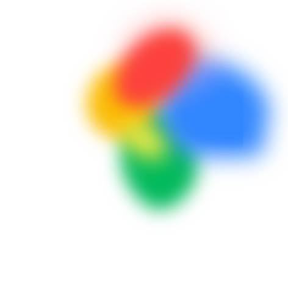
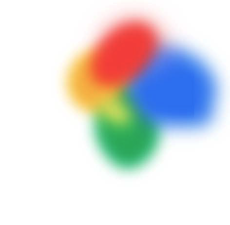
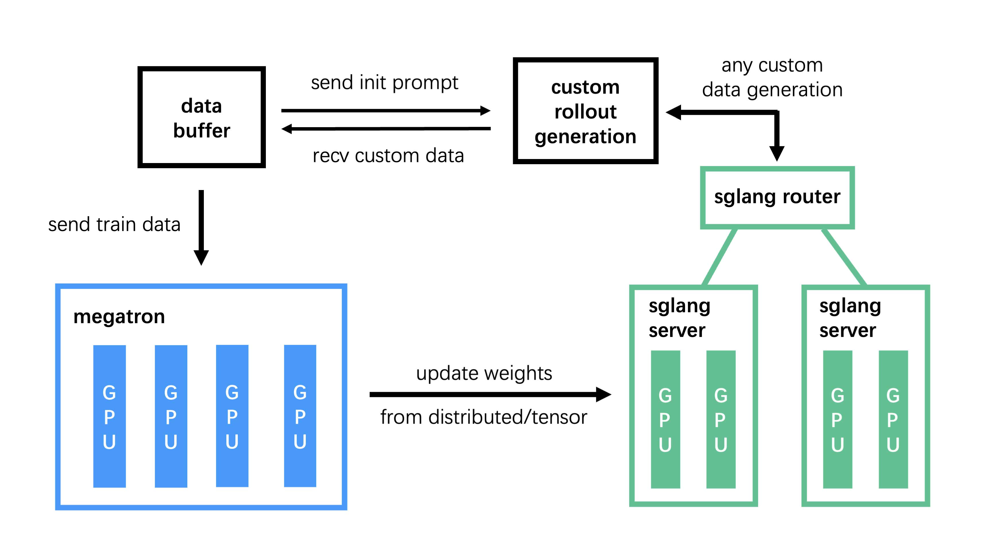

一句话总结:GLM-4.5 是智谱开源的 355B/32B-active MoE Agentic Foundation Model,在 23T token 上做 pre-training + mid-training(repo-level code → 合成 reasoning → long-context & agent),后训练分两阶段:Stage 1 用 SFT 冷启动后做三阶段 RL — Reasoning RL → Agentic RL → General RL(三个专家模型),Stage 2 再做 self-distillation 把三个专家融合成一个 hybrid reasoning generalist;在 ARC(Agentic/Reasoning/Coding)12 个 benchmark 上综合排名第三,agentic 第二,且参数量是 DeepSeek-R1 的一半、Kimi K2 的三分之一。
🎯 面试考点(高频):

① 图说明:论文门面图 — GLM-4.5 与 GPT-4.1/o3/o4-mini/Claude Opus 4/Claude Sonnet 4/Gemini 2.5 Pro/Grok 4/Kimi K2/DeepSeek-V3-0324/DeepSeek-R1-0528/Qwen3-235B 等顶尖闭源/开源模型,在 ARC = Agentic + Reasoning + Coding 三个维度共 12 个 benchmark(MMLU-Pro、AIME 24、MATH-500、SciCode、GPQA、HLE、LCB、SWE-Bench Verified、Terminal-Bench、TAU-Bench、BFCL V3、BrowseComp)的平均分对比。
② 关键数据:总榜 — o3($63.2$)第一、GLM-4.5($59.8$)第三;Agentic — o3 第一、GLM-4.5($58.1$)第二,把 Claude Opus 4 / Sonnet 4 / Grok 4 都甩在身后;Reasoning — Grok 4($68.8$)/Gemini 2.5 Pro($66.1$)居首,GLM-4.5 居中游;Coding — Claude Opus 4($50.9$)第一,GLM-4.5($41.5$)第三。
③ 启示:图想传达的核心叙事是 — GLM-4.5 把 agentic 当成第一性能维度来训(不是 reasoning 副产品),用 355B/32B-active 的"经济型"参数,在 agentic 上挑战 o3,在总榜挤进前三;但纯 reasoning(数学/科学)仍稍逊于 Grok 4 / Gemini 2.5 Pro 这类专门优化的前沿模型 — 这正是三阶段 RL(reasoning→coding→agentic)设计取舍的反映。

① 图说明:横轴是模型总参数量(B),纵轴是 SWE-Bench Verified 得分;只标注开源模型(Qwen3-235B-A22B-Thinking-2507、MiniMax-M1、DeepSeek-R1-0528、Kimi K2、GLM-4.5、GLM-4.5-Air),闭源模型(Claude Sonnet 4 / GPT-4.1 / Gemini 2.5 Pro)因不公开参数被放到右侧"Unknown"区。
② 关键数据:GLM-4.5($355\text{B}$,SWE-Bench Verified $64.2\%$)与 GLM-4.5-Air($106\text{B}$)落在 参数–性能 Pareto Frontier — 同等性能下参数最少,同等参数下性能最强;Kimi K2($1\,043\text{B}$)、DeepSeek-R1($671\text{B}$)虽然参数更大,但 SWE-Bench 得分低于 GLM-4.5。
③ 启示:这张图是 GLM-4.5 主打的"参数效率叙事"的最直接背书 — 不是靠堆参数赢,而是靠 agentic RL + iterative self-distillation + repo-level code mid-training 把 coding agent 能力压榨出来;面试时被问"为什么不是更大?"可以正面引用 — 论文显式承认 GLM-4.5 只有 DeepSeek-R1 一半参数、Kimi K2 三分之一参数。

① 图说明:Slime RL 基础设施架构总览 — 三大模块:Training (Megatron) 负责训练主流程、从 Data Buffer 读数据、训完同步参数到 rollout;Rollout (SGLang + Router) 负责生成新数据(含 reward 与 verifier 输出)写入 Data Buffer;Data Buffer 作为桥梁,统一管理 prompt 初始化、自定义数据、rollout 生成策略。
② 关键数据:支持两种调度模式 — reasoning/math 用 colocated 同步(训练 + 推理同一 GPU,配合 dynamic sampling 极致压榨利用率);agentic/SWE 用 disaggregated 异步(rollout 和 training GPU 独立调度,环境长尾不阻塞);训练 BF16 + 推理 online block-wise FP8 量化;agent 任务用 Docker 高并发 runtime 隔离,通过 HTTP endpoint + 中心化 data pool 接入异构 agent 框架。
③ 启示:RL 工程化的"教科书设计" — 把计算密集型的 reasoning RL 和I/O 密集型的 agentic RL 物理隔离,各取所长;FP8 推理 + BF16 训练是当下 RL 鲁棒的最佳实践(精度损失可控、吞吐翻倍);data pool 抽象使得 SWE-bench / TAU / BrowseComp / AgentGym 等异构环境可以共用同一套训练循环,这是多任务 agentic RL 能 scale 的前提。
GLM-4.5: Agentic, Reasoning, and Coding (ARC) Foundation Models. Authored by the GLM-4.5 Team at Zhipu AI & Tsinghua University (Beijing). The paper is the technical report accompanying the open-source release of the GLM-4.5 series — a $355\text{B}$-total / $32\text{B}$-active Mixture-of-Experts flagship and the smaller $106\text{B}$ / $12\text{B}$ GLM-4.5-Air variant. The work positions itself as the first open-source attempt to jointly push agentic, reasoning and coding (the "ARC" axes) inside a single hybrid-reasoning model, rather than treating one axis as primary and others as side-effects.
GLM-4.5:Agentic、Reasoning 与 Coding(ARC)基础模型。作者是智谱 AI 与清华大学(北京)的 GLM-4.5 团队。这篇论文是 GLM-4.5 系列开源发布的技术报告 — 包含旗舰版($355\text{B}$ 总参 / $32\text{B}$ 激活的 Mixture-of-Experts)和较小的 GLM-4.5-Air 变体($106\text{B}$ / $12\text{B}$)。工作把自己定位为首个把 agentic、reasoning、coding(也就是 "ARC" 三轴)在同一个 hybrid reasoning 模型里共同推进的开源尝试,而不是把某一轴当主轴、其余作为副产品。
GLM-4.5 is an open-source MoE LLM with $355\text{B}$ total / $32\text{B}$ activated parameters, designed as an Agentic-Reasoning-Coding (ARC) foundation model. It supports a hybrid reasoning mode that toggles between a deliberative thinking mode and a fast direct-response mode. The recipe is a multi-stage pre-training over $23\text{T}$ tokens followed by post-training with expert model iteration plus reinforcement learning. The model scores $70.1\%$ on TAU-Bench, $91.0\%$ on AIME 24, and $64.2\%$ on SWE-bench Verified — ranking 3rd overall and 2nd on agentic benchmarks among all evaluated models, while using far fewer parameters than its competitors. Authors release both the $355\text{B}$ flagship and a compact $106\text{B}$ variant (GLM-4.5-Air) to advance reasoning and agentic research.
GLM-4.5 是一个开源的 MoE 大模型,总参数 $355\text{B}$、激活 $32\text{B}$,被定位为 ARC(Agentic-Reasoning-Coding)foundation model。它支持一种 hybrid reasoning 模式 — 既可"想清楚再答"(thinking),也可直接快答(direct response)。配方是:在 $23\text{T}$ token 上做多阶段 pre-training,再做"专家模型迭代 + RL"的 post-training。在 TAU-Bench 上 $70.1\%$、AIME 24 上 $91.0\%$、SWE-bench Verified 上 $64.2\%$ — 综合排名第三、agentic 排名第二,而参数量明显少于诸多竞品。作者开源 $355\text{B}$ 旗舰和 $106\text{B}$ 紧凑版 GLM-4.5-Air,以推动 reasoning 与 agentic AI 的研究。
The ARC framing. The authors frame the path to AGI as needing three interconnected capabilities — Agentic (tool/world interaction), Reasoning (multi-step math/science), and Coding (real-world software engineering) — collectively "ARC". While proprietary models like o1/o3 and Claude Sonnet 4 each excel in some ARC dimension, no single open-source model has unified all three. GLM-4.5 and GLM-4.5-Air target exactly this unification, introducing a hybrid thinking/non-thinking mode switch so that a deliberative chain-of-thought is available on hard problems while fast direct responses are available on easy ones. GLM-4.5 is the team's first Mixture-of-Experts release; both models are publicly open-sourced (weights + recipe) to advance agentic and reasoning research.
ARC 路线定义。作者把通向 AGI 的路线定义为三种互相耦合的能力 — Agentic(与工具和现实世界交互)、Reasoning(多步数学 / 科学推理)、Coding(真实软件工程),合称 "ARC"。闭源 SOTA(o1/o3、Claude Sonnet 4)在 ARC 的某一个维度都很强,但还没有一个开源模型把三者统一到一个模型里。GLM-4.5 与 GLM-4.5-Air 就是冲着这个统一目标去的,并引入 thinking / non-thinking 双模式开关 — 在难题上走 chain-of-thought,在简单问题上直接回答。GLM-4.5 是团队首个 Mixture-of-Experts 模型;两个模型(权重 + 配方)都公开开源,以推动 agentic 与 reasoning 的研究。
Headline numbers and parameter efficiency. GLM-4.5 posts results like BFCL v3 $77.8\%$, BrowseComp $26.4\%$, AIME 24 $91.0\%$, GPQA $79.1\%$, SWE-bench Verified $64.2\%$, Terminal-Bench $37.5\%$ — placing $3\text{rd}$ overall and $2\text{nd}$ on agentic benchmarks among the $12$ evaluated proprietary and open-source models. Notably it uses only about half of DeepSeek-R1's parameters and one-third of Kimi K2's, sitting on the Pareto frontier of SWE-bench-vs-parameters. The headline framing is therefore not "biggest model wins" but "parameter-efficient ARC generalist", made possible by a narrow-deep MoE shape, a repo-level + agent mid-training stage, and a multi-track expert-iteration RL recipe described in the rest of the paper.
核心成绩与参数效率叙事。GLM-4.5 的核心成绩包括 BFCL v3 $77.8\%$、BrowseComp $26.4\%$、AIME 24 $91.0\%$、GPQA $79.1\%$、SWE-bench Verified $64.2\%$、Terminal-Bench $37.5\%$ — 在 $12$ 个评测的闭源 + 开源模型里,综合排名第 $3$、agentic 排名第 $2$。值得一提的是,它只用了 DeepSeek-R1 一半左右的参数、Kimi K2 三分之一的参数,在 SWE-bench-vs-参数图上落在 Pareto Frontier 上。因此论文的核心叙事不是"参数越大越强",而是"参数高效的 ARC 通才" — 这靠的是窄而深的 MoE 形状、repo-level + agent 的 mid-training 阶段,以及全文后半部分要展开的 multi-track 专家迭代 RL 配方。
GLM-4.5 adopts a MoE backbone with loss-free balance routing and sigmoid gates (following DeepSeek-V3), but diverges in shape: the team makes the model narrower and deeper than DeepSeek-V3/Kimi K2 because they found depth correlates more strongly with reasoning gains than width. The flagship has $3$ dense + $89$ MoE layers, hidden dim $5120$, $160$ routed experts with $8$ activated and $1$ shared expert, totalling $355\text{B}$ params / $32\text{B}$ active. Attention uses Grouped-Query Attention with partial RoPE; counter-intuitively they use $2.5\times$ more attention heads ($96$ heads for $5120$ hidden) — this does not improve training loss but consistently lifts MMLU/BBH at evaluation. QK-Norm stabilises attention-logit ranges, and an extra MoE layer serves as the MTP (Multi-Token Prediction) head to enable speculative decoding at inference time. GLM-4.5-Air is the compact sibling ($106\text{B}$ total / $12\text{B}$ active, $1$ dense + $45$ MoE layers, $128$ experts).
GLM-4.5 采用 MoE 主干,沿用 DeepSeek-V3 的 loss-free balance routing 与 sigmoid 门控,但在形状上走窄而深的路线 — 因为团队发现,深度对 reasoning 的增益明显大于宽度。旗舰版结构是 $3$ dense + $89$ MoE 层,hidden dim $5120$,$160$ 个路由专家、激活 $8$ 个,外加 $1$ 个 shared expert,合计 $355\text{B}$ 总参数、$32\text{B}$ 激活。注意力用 GQA + partial RoPE;反常识地把注意力头数加到 $96$(为 $5120$ hidden 配 $2.5\times$ 常规头数) — 这并不改善 training loss,但在 MMLU/BBH 等评测上稳定提升。QK-Norm 用来稳定 attention logit 范围;额外加一层 MoE 作为 MTP(多 token 预测)头,用于推理期 speculative decoding。GLM-4.5-Air 是紧凑版,$106\text{B}$ 总参数 / $12\text{B}$ 激活,$1$ dense + $45$ MoE 层,$128$ 个专家。
Data. The pre-training corpus mixes English/Chinese webpages, multilingual documents, code from GitHub-and-peers, plus math/science from web+books+papers. Webpages are bucketed by quality score (Nemotron-CC style) — the highest bucket is up-sampled to $3.2$ epochs and the lowest discarded; SemDedup is used on top of MinHash to remove template-generated near-duplicates. Code is filtered by a language-specific quality model into three tiers (high up-sampled, low excluded), and gets a Fill-In-the-Middle objective. Math/science documents are scored by an LLM for educational utility and up-sampled above a threshold. Pre-training runs in two stages: stage one is general web, stage two up-samples code + math/science.
数据。预训练语料覆盖英中文网页、多语种文档、GitHub 等平台的代码,以及网页+书籍+论文里的数学/科学。网页按质量分桶(参考 Nemotron-CC)— 最高桶上采样到 $3.2$ epoch,最低桶直接扔掉;在 MinHash 之外再用 SemDedup 去掉那些"模板生成"的近重复网页。代码用语种专属的质量模型分高/中/低三档,高档上采样、低档剔除,并全量套上 Fill-In-the-Middle 目标。数学/科学文档用 LLM 打"教育性"分,分高于阈值的上采样。预训练分两阶段:第一阶段以通用网页为主,第二阶段把代码 + 数学/科学的占比拉高。
Mid-Training. After pre-training, three medium-scale stages further shape the base model. Repo-level Code: same-repo files are concatenated to teach cross-file dependency, and GitHub issues/PRs/commits are joined into one context with commits formatted as diffs; sequence length extends $4\text{K} \to 32\text{K}$. Synthetic Reasoning Data: massive math/science/coding-competition Q-A pairs are augmented with reasoning chains generated by a stronger reasoner. Long-context & Agent: extends $32\text{K} \to 128\text{K}$, up-samples long documents, and adds large-scale synthetic agent trajectories. Best-fit packing is used in mid-training (but not pre-training, where random truncation acts as augmentation).
中期训练(Mid-Training)。预训练之后,加三个中等规模的阶段来进一步打磨基模。Repo-level Code:把同一 repo 的文件拼接,教会跨文件依赖;把 GitHub 的 issue / PR / commit 拼成同一上下文,commit 用 diff 格式表达;sequence length 从 $4\text{K}$ 扩到 $32\text{K}$。合成 reasoning 数据:大规模收集数学、科学、编程竞赛的 Q-A,用更强的 reasoner 合成 CoT 推理过程。长上下文 + Agent:把序列长度再从 $32\text{K}$ 扩到 $128\text{K}$,上采样长文档,并塞入大规模合成的 agent trajectory。中期训练用了 best-fit packing(预训练不用,因为随机截断本身就是 augmentation)。
Hyper-Parameters. The team uses the Muon optimizer for everything except embeddings, biases, and RMSNorm weights (Newton-Schulz steps $N=5$, momentum $\mu=0.95$, update RMS scaled to $0.2$); they note Muon both converges faster and tolerates larger batches. LR follows cosine decay from $2.5\text{e-}4$ to $2.5\text{e-}5$ — they explicitly say WSD underfits on SimpleQA/MMLU compared to cosine. Batch size warms up from $16\text{M}$ to $64\text{M}$ tokens over the first $500\text{B}$ tokens. Weight decay is $0.1$, no dropout. When extending to $32\text{K}$, RoPE base frequency is bumped $10\,000 \to 1\,000\,000$; loss-free routing's bias update rate is $0.001$ for the first $15\text{T}$ tokens then $0.0$; an auxiliary sequence-level balance loss with weight $0.0001$ avoids per-sequence imbalance; MTP loss weight $\lambda = 0.3$ then $0.1$.
超参数。除 embedding/bias/RMSNorm 外所有参数都用 Muon 优化器(Newton-Schulz 步数 $N=5$,动量 $\mu=0.95$,update RMS 缩放到 $0.2$);团队明确说 Muon 既加速收敛又能扛更大 batch。学习率 cosine decay,从 $2.5\text{e-}4$ 衰到 $2.5\text{e-}5$ — 论文明说 WSD 在 SimpleQA/MMLU 上欠拟合,所以放弃。batch size 在前 $500\text{B}$ token 里从 $16\text{M}$ 暖到 $64\text{M}$ tokens 后保持不变。weight decay $0.1$,不加 dropout。扩到 $32\text{K}$ 上下文时把 RoPE base frequency 从 $10\,000$ 改到 $1\,000\,000$;loss-free routing 的 bias 更新率前 $15\text{T}$ token 是 $0.001$、之后是 $0.0$;额外加一个权重 $0.0001$ 的序列级平衡辅助损失,避免单条序列上的极端不平衡;MTP loss 权重 $\lambda$ 前 $15\text{T}$ token 是 $0.3$、之后是 $0.1$。
Two-stage post-training with expert model iteration. Stage 1 (Expert Training) trains three specialist models — one each for Reasoning, Agent, and General chat — by doing cold-start SFT on each domain followed by domain-specific RL. Stage 2 (Unified Training) uses self-distillation to fuse the three experts back into a single hybrid-reasoning generalist that supports both thinking and direct-response modes. Cold-start SFT uses a small set of extended-CoT data to seed each expert with basic chat / reasoning / tool-use abilities; in Stage 2 the SFT objective is to distil the three experts' capabilities into one model. The overall RL algorithm is based on GRPO with the KL term dropped, and is specialised differently for each of the three expert tracks.
两阶段后训练 + 专家模型迭代。Stage 1(专家训练)分别为 Reasoning / Agent / General chat 训三个专家模型 — 每个领域先做冷启动 SFT,再做该领域专属的 RL。Stage 2(统一训练)用 self-distillation 把三个专家融合成一个 hybrid reasoning 通才,既能 thinking 又能直接回答。冷启动 SFT 用少量带延展 CoT 的数据,给每个专家打底(基础对话/推理/工具使用);Stage 2 的 SFT 目的则是把三个专家的能力蒸馏进一个模型。整体 RL 算法基于 GRPO 并去掉 KL 项,在三条专家轨道上各自做不同的特化。
Scope & first two engineering tricks. Reasoning RL covers math, code generation and scientific reasoning — domains where correctness is programmatically verifiable, giving dense reliable rewards that let RL scale. Two of the four engineering tricks address what the model trains on and how long its outputs are: (1) Difficulty-based curriculum — stage one uses moderate-difficulty problems; stage two switches to extremely hard problems (pass@8 = 0 but pass@512 > 0) drawn only from a verified-answer pool, which keeps improving past the plateau of a single-difficulty baseline. (2) Single-stage RL at $64\text{K}$ output length — multi-stage length-increasing schedules cause irreversible length-collapse (once a policy collapses to short, it cannot be reverted), so the team runs RL directly at the target $64\text{K}$.
范围与前两个工程技巧。Reasoning RL 覆盖数学、代码生成与科学推理 — 这些领域对错可程序化校验,reward 信号致密可靠,使 RL 真正能 scale。四个工程技巧里前两个解决"训什么"与"输出多长":① 难度课程 — 第一阶段用中等难度,第二阶段切到极难题(pass@8 = 0 但 pass@512 > 0),且只从答案已被验证的题池里抽,能突破单难度 baseline 的瓶颈。② $64\text{K}$ 单阶段 RL — "由短到长"的多阶段调度会导致不可逆的长度坍塌(一旦 policy 退化到短就再也回不来),所以团队直接在目标 $64\text{K}$ 上 RL。
Sampling temperature & per-domain specialisation. The remaining two tricks handle exploration and domain-specific reward shaping: (3) Dynamic sampling temperature — when mean reward plateaus, temperature is raised to encourage exploration, but bounded by a quality-control rule (no more than $1\%$ drop on a held-out set), so exploration cannot quietly destroy the policy. (4) Code & science specialisation — code RL uses token-weighted mean loss (faster convergence than sequence-mean, kills "base-case" length-hacking where the model writes only the trivial branch); science RL on GPQA-Diamond works best with exclusively expert-verified multiple-choice data — mixing unverified open-ended questions actually hurts the final score because noisy rewards leak into gradient updates.
采样温度与领域特化。剩下两个技巧分别处理"探索"和"领域 reward 定制":③ 动态采样温度 — 当平均 reward 趋于平稳时升温以鼓励探索,但用 holdout 集做质量门禁(下降不超过 $1\%$),防止探索悄悄把 policy 搞坏。④ code 与 science 特化 — code RL 用 token-weighted mean loss(收敛更快,抑制"短 base case"作弊 — 即模型只写最 trivial 的分支;比 sequence-mean 好);GPQA-Diamond 上 science RL 只用专家校验过的选择题数据,混入未校验的开放题反而拉低最终分数,因为带噪声的 reward 会污染梯度更新。
Agentic RL focuses on two automatically-verifiable settings — web-search agents and SWE coding agents — because every action's outcome can be programmatically checked, yielding dense rewards that let RL scale. For web search the team builds a data pipeline mixing knowledge-graph multi-hop synthesis with human-in-the-loop content obfuscation, designed to elicit elusive interwoven facts. For SWE they curate GitHub PRs/issues into prompts with executable unit tests, evaluated inside a hardened distributed Docker sandbox. The objective is group-wise: $L_\text{RL}(\theta) = \mathbb{E}_{x \sim \mathcal{D}}\!\left[\tfrac{1}{K} \sum_{i=1}^{K} \bigl(r(x,y_i) - \bar{r}(x)\bigr)\right]$, where only model-generated tokens enter the loss (environment feedback masked out) and a process-format penalty zeroes the reward when tool-call format breaks.
Agentic RL 聚焦两个"可自动校验"的场景 — web-search agent 与 SWE coding agent — 因为每步动作的结果都能被程序判定,reward 信号致密,使 RL 真正能 scale。Web search 的数据由两部分混合:基于知识图的多跳合成问答,以及人在环路中对若干网页内容做选择性混淆;意在逼模型挖出"散在多源、互相交织"的难找事实。SWE 部分则把 GitHub PR/issue 整理成"prompt + 可运行单元测试",在加固过的分布式 Docker 沙箱里跑。优化目标是 group-wise: $L_\text{RL}(\theta) = \mathbb{E}_{x\sim\mathcal{D}}\!\left[\tfrac{1}{K}\sum_{i=1}^{K}\bigl(r(x,y_i)-\bar{r}(x)\bigr)\right]$;loss 里只算模型生成的 token,环境反馈不参与;并加 process-format 惩罚 — 工具调用格式不对直接 reward 置零。
Iterative self-distillation + test-time scaling via interaction turns. Because agent-task RL rollouts are slow, the team alternates RL with self-distillation: train RL on the cold-start model until it plateaus, then replace the cold-start SFT data with responses sampled from the RL-trained model to form a stronger SFT base, then RL again on that base — progressively ratcheting up difficulty. They also note that on web-search and SWE, RL gains generalise to other tasks (e.g. Terminal-Bench, general tool use). Crucially, for agent tasks test-time compute scales not by more output tokens (as in reasoning) but by more interaction turns with the environment; Figure 8 shows BrowseComp accuracy increases smoothly with browsing effort.
迭代自蒸馏 + 用交互轮数 scale 推理算力。因为 agent 任务的 rollout 很慢,团队把 RL 与 self-distillation 交替进行:在冷启动模型上 RL 跑到平台期 → 用 RL 模型生成的回答替换掉原 cold-start SFT 数据 → 得到一个更强的 SFT base → 再 RL,逐步加难度。他们还发现:web-search 与 SWE 上的 RL 收益会外溢到其它任务(如 Terminal-Bench、通用工具使用)。一个关键观察是:agent 任务的 test-time compute 不靠"输出更多 token"(reasoning 那一套)来 scale,而是靠与环境多轮交互来 scale — 图 8 显示 BrowseComp 的准确率随浏览努力平滑上升。
General RL — three reward sources, Holistic + Instruction-Following sub-tracks. General RL is the final post-training stage and combines three reward sources: rule-based, RLHF (human-preference reward model), and RLAIF (model-based scoring). It has four sub-tracks; the first two cover open-ended chat quality and instruction adherence. Holistic RL uses $\sim 5\,000$ prompts spanning $7/33/139$ category levels with both a human-pref reward model and rubric-based AI feedback, so the model improves across many broad chat categories without overfitting to any one rubric. Instruction Following RL defines a fine-grained $7$-major / $151$-minor constraint taxonomy and uses a hybrid feedback (deterministic verifier + RM + critique model) — Figure 9 shows SysBench-ISR climbs from $\sim 64$ to $77.2$ with no clear reward-hacking even at $1\,000$ steps.
General RL — 三类 reward 源、Holistic + Instruction-Following 两条子轨。General RL 是后训练的收尾阶段,把三种 reward 源合在一起:规则、RLHF(人类偏好 reward model)、RLAIF(模型打分)。它包含四条子轨道,前两条覆盖开放式聊天质量与指令遵循。Holistic RL 用大约 $5\,000$ 条 prompt,横跨 $7/33/139$ 三级分类,reward 同时来自人偏好 RM 和按 rubric 打分的 AI 反馈,让模型在多种广义聊天类别上都提升,而不会被任一条 rubric 过拟合。Instruction Following RL 自定义了 $7$ 大类 / $151$ 小类的约束分类法,用"确定性 verifier + RM + critique model"的混合反馈 — 图 9 显示 SysBench-ISR 从约 $64$ 涨到 $77.2$,跑到 $1\,000$ 步也没看见明显 reward hacking。
Function-Calling and Pathology sub-tracks. The last two sub-tracks target tool-use correctness and low-frequency failure modes. Function Calling RL splits into step-wise rule-based (exact-match reward over function name / parameters / fields — any deviation zeros the reward, forcing strict structural correctness) and end-to-end multi-turn (only the final TaskCompleted signal matters, letting the model freely explore intermediate tool-use trajectories). Pathology RL targets a curated dataset of prompts likely to trigger language-mixing / repetition / formatting bugs, since these failure modes are too rare ($< 1\%$) for the other RL tracks to fix sample-efficiently — concentrating training data on the exact prompts that elicit pathology gives much higher signal-per-step than waiting for them to appear in general RL.
Function Calling 与 Pathology 两条子轨。剩下两条子轨分别针对工具调用的正确性与低频失败模式。Function Calling RL 分两块:step-wise 规则 RL 用严格匹配 reward(function name / parameters / 字段必须完全一致 — 哪怕一处不符 reward 立即置零,强制结构正确性);end-to-end multi-turn RL 只看最终 TaskCompleted 信号,让模型自由探索中间的工具使用轨迹。Pathology RL 单独针对"语种混用 / 过度重复 / 格式错乱"这类低频($< 1\%$)病灶,专门收集易触发这些病灶的 prompt 去 RL — 因为这些失败模式太罕见,正常 RL 样本效率太低,而把训练数据集中到能精准触发病灶的 prompt 上,每步的信号密度反而远高于在 general RL 里"碰运气"。
Slime is the open-source RL framework (Megatron training + SGLang/Router rollout + central Data Buffer) that ties everything together. It supports two scheduling modes selectable per task: colocated synchronous (training and inference on the same worker, ideal for reasoning/math RL because dynamic sampling fills GPU idle gaps) and disaggregated asynchronous (training and rollout GPUs decoupled, ideal for agentic RL where SWE/web environments have long-tail trajectories that would otherwise stall training). For rollout acceleration, Slime trains in BF16 but performs online block-wise FP8 quantisation for inference at each policy update. Agent-task infrastructure adds a high-concurrency Docker runtime for isolated environments and a unified HTTP endpoint + central data pool so heterogeneous agent frameworks (AgentGym etc.) can plug into the same RL loop.
Slime 是配套开源的 RL 框架(Megatron 训练 + SGLang/Router rollout + 中心化 Data Buffer),把所有模块串起来。它支持两种按任务选择的调度模式:colocated 同步(训练 / 推理在同一 worker,适合 reasoning/math RL,因为 dynamic sampling 能填上 GPU 空闲)和 disaggregated 异步(训练 / rollout 的 GPU 解耦,适合 agentic RL — SWE 和 web 环境的 trajectory 长尾很重,否则会卡死训练)。为提升 rollout 吞吐,训练用 BF16,但推理时对模型参数做 online block-wise FP8 量化,在每次策略更新时动态完成。Agent 任务层面再加一个高并发 Docker runtime 来隔离环境,以及统一的 HTTP endpoint + 中心化 data pool,让 AgentGym 等异构 agent 框架可以接入同一套 RL 训练循环。
Base model. GLM-4.5-Base (the pre-training checkpoint, no instruction tuning) is compared against Qwen3-235B-Base, Llama-4-Maverick, DeepSeek-V3-Base, Kimi-K2-Base across English (SimpleQA / BBH / MMLU / HellaSwag / PIQA / TriviaQA), Code (EvalPlus / LiveCodeBench-Base), Math (GSM8K / MATH) and Chinese (CLUEWSC / C-Eval / C3 / Chinese-SimpleQA). GLM-4.5-Base scores broadly competitively — e.g. MMLU $86.1$, LiveCodeBench-Base $28.1$ (best in the table), C-Eval $86.9$, Chinese-SimpleQA $70.1$ — validating that a single unified base can hold up across English/Chinese/Code/Math without sacrificing one axis to win another.
基模评测。GLM-4.5-Base(纯预训练 checkpoint,没做指令微调)对比 Qwen3-235B-Base、Llama-4-Maverick、DeepSeek-V3-Base、Kimi-K2-Base,横跨英文(SimpleQA / BBH / MMLU / HellaSwag / PIQA / TriviaQA)、代码(EvalPlus / LiveCodeBench-Base)、数学(GSM8K / MATH)和中文(CLUEWSC / C-Eval / C3 / Chinese-SimpleQA)。GLM-4.5-Base 整体表现稳健 — 例如 MMLU $86.1$、LiveCodeBench-Base $28.1$(表里最高)、C-Eval $86.9$、Chinese-SimpleQA $70.1$ — 印证了"一个统一基模能在英中文/代码/数学四条线上都不掉链子",而不是靠牺牲某一维换另一维。
Agentic benchmarks. On TAU-Bench (Retail / Airline) and BFCL v3, GLM-4.5 matches or beats Claude Sonnet 4 (TAU-Retail $79.7$ vs $80.5$, TAU-Airline $60.4$ vs $60.0$, BFCL v3 $77.8$ vs $75.2$); BrowseComp is harder ($26.4$, close to o4-mini's $28.3$ but well behind o3's $49.7$). Agentic average $58.1$ puts GLM-4.5 second only to o3. In coding-agent head-to-head human eval, GLM-4.5 wins $40.4\%$ / ties $9.6\%$ / loses $50.0\%$ vs Claude Sonnet 4, but crushes Kimi K2 ($53.9\%$ win) and Qwen3-Coder ($80.8\%$ win); tool-calling success rate hits $90.6\%$ — the highest among compared models.
Agentic benchmark。在 TAU-Bench(零售 / 航空)与 BFCL v3 上,GLM-4.5 与 Claude Sonnet 4 打成平手或反超(TAU-Retail $79.7$ vs $80.5$、TAU-Airline $60.4$ vs $60.0$、BFCL v3 $77.8$ vs $75.2$);BrowseComp 较难,$26.4$ — 接近 o4-mini($28.3$)但落后于 o3($49.7$)。Agentic 平均 $58.1$,在所有评测模型中仅次于 o3 排第二。在编码 agent 的"头对头"人工评测里,GLM-4.5 vs Claude Sonnet 4 胜 $40.4\%$ / 平 $9.6\%$ / 负 $50.0\%$,但完胜 Kimi K2($53.9\%$ 胜率)与 Qwen3-Coder($80.8\%$ 胜率);工具调用成功率达 $90.6\%$,是所有对比模型中最高的。
Reasoning & Coding benchmarks. Reasoning: AIME 24 $91.0$, MATH-500, SciCode, GPQA $79.1$, HLE $14.4$, LCB (2407-2501) $72.9$ — competitive with frontier reasoners though not topping every line. Coding: SWE-Bench Verified $64.2$ and Terminal-Bench $37.5$ — beating GPT-4.1 and Gemini-2.5-Pro, closing in on Claude Sonnet 4. On a newly constructed novel-logical-reasoning evaluation built to avoid web contamination, GLM-4.5 scores $62.0$, close to DeepSeek-R1-0528 ($62.1$) and Gemini 2.5 Pro ($65.8$). For translation, GLM-4.5 averages $1.71/3$ on $100$ tricky idiomatic cases (netizen slang, domain nicknames, emoji semantics), beating specialised models like Qwen-MT-plus ($0.38$) and Seed-X ($0.65$).
Reasoning & Coding benchmark。Reasoning:AIME 24 $91.0$、MATH-500、SciCode、GPQA $79.1$、HLE $14.4$、LCB (2407-2501) $72.9$ — 在前沿 reasoner 之间有竞争力,但并非每条都登顶。Coding:SWE-Bench Verified $64.2$、Terminal-Bench $37.5$ — 压过 GPT-4.1 与 Gemini-2.5-Pro,逼近 Claude Sonnet 4。为了避免"网上常见逻辑题被训练时见过"的污染,作者还自建了一套新型逻辑推理评测;GLM-4.5 得 $62.0$,接近 DeepSeek-R1-0528 的 $62.1$ 与 Gemini 2.5 Pro 的 $65.8$。翻译方面,在 $100$ 个"现有工具常翻错"的难例(网络黑话、领域昵称、emoji 语义)上,GLM-4.5 平均 $1.71/3$,远高于 Qwen-MT-plus($0.38$)和 Seed-X($0.65$)等专门翻译模型。
The GLM-4.5 series (GLM-4.5 and GLM-4.5-Air) consolidates MoE architecture, expert-iteration post-training, and a three-track RL recipe (Reasoning → Agentic → General) into a single open-source release. GLM-4.5 reaches 3rd place globally among open-source and proprietary models on the ARC benchmarks while staying parameter-efficient. Weights are released to advance applications and research on agentic foundation models.
GLM-4.5 系列(GLM-4.5 与 GLM-4.5-Air)把 MoE 架构、"专家迭代"式后训练和三条 RL 轨道(Reasoning → Agentic → General)整合成一个开源版本。GLM-4.5 在 ARC benchmark 总榜上跻身开源 + 闭源全球第 3,而且参数效率高。模型权重已开放,以推动 agentic foundation model 的应用与研究。
References (p.23 onward). The bibliography is intentionally omitted from this reader; the original PDF starts the reference list on page $23$ and runs through the back-matter. Key papers cited in line throughout GLM-4.5's design include — DeepSeek-V3 (loss-free routing, sigmoid gate, MTP head); Kimi K2 (the $1\,043\text{B}$ comparator on SWE-Bench); Qwen3-235B (open-source MoE peer); GRPO (group relative policy optimisation, the base RL algorithm); Muon optimizer (Newton-Schulz orthogonalised update); Megatron and SGLang (training and rollout backends inside Slime); SWE-Bench Verified / TAU-Bench / BFCL v3 / BrowseComp / AgentGym (the agentic evaluation suite). For exact citation strings, see the PDF.
参考文献(p.23 起)。本阅读器有意省略参考文献清单;原文 PDF 自第 $23$ 页起列出全部参考文献并贯穿至文末。GLM-4.5 设计中行内提及的关键论文包括:DeepSeek-V3(loss-free 路由、sigmoid 门控、MTP 头);Kimi K2(SWE-Bench 上 $1\,043\text{B}$ 的对照模型);Qwen3-235B(开源 MoE 对标);GRPO(group relative policy optimisation,作为 RL 的基础算法);Muon optimizer(基于 Newton-Schulz 的正交化更新);Megatron 与 SGLang(Slime 内部的训练与 rollout 后端);SWE-Bench Verified / TAU-Bench / BFCL v3 / BrowseComp / AgentGym(agentic 评测套件)。精确的引用条目请查原文 PDF。